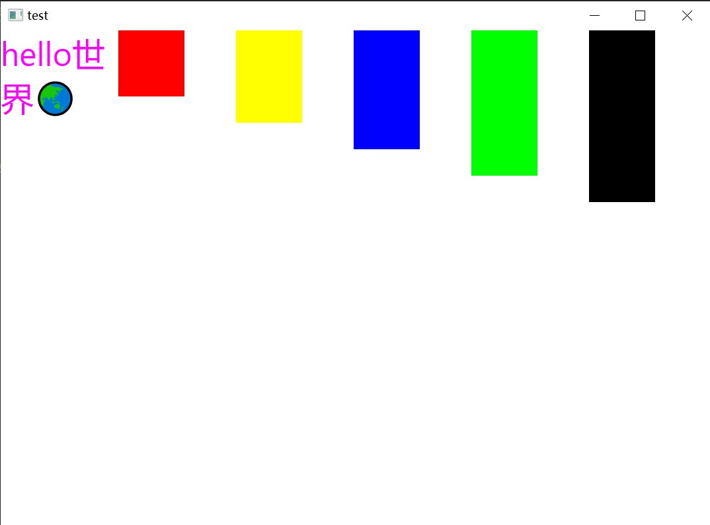

Irisia-rs
Irisia GUI is a GUI framework based on Rust programming language, featured high-performance, cross-platform, flexible, empowers everyone to build an morden applications with accuracy and efficiency.
Irisia is heavily depend on following crates:
- winit: A window launcher, which is widely used in Rust.
- skia-safe: Bindings to Skia. Skia is a graphics library developed by Google, used by lots of project, most famously Chrome and Android.
- tokio: A asynchronous library with runtime and useful utils, which is high-speed and reliable.
About English Documentation
- We are sorry but English documentation is not available now. We will add as soon as possible.
- How about take a look at
windowexample? - If you tend to translate the documentation into English, please feel free to open an issue. Thanks a lot.
Irisia Book
Only Chinese is available now :/
目前只有中文可用
👇
https://fancyflame.github.io/irisia-rs/
Take a quick look
A simple window application is looks like following. Newest examples please take a look at examples directory.
#[irisia::main]
async fn main() {
irisia::new::<App>("test".into()).await.unwrap().join().await;
}
struct App {
rects: Vec<Color>,
}
impl Default for App {
fn default() -> Self {
Self {
rects: vec![
Color::RED,
Color::YELLOW,
Color::BLUE,
Color::GREEN,
Color::BLACK,
],
}
}
}
impl Element for App {
type Props<'a> = NoProps;
type ChildProps<'a> = NeverInitalized;
irisia::render_fn! {
@init(self);
Flex {
TextBox {
text: "hello世界🌏",
+style: style!{
color: Color::MAGENTA;
font_slant: .normal;
font_size: 50px;
}
}
for (index, color) in self.rects.iter().enumerate() {
@key index;
Rectangle {
+id: ("rect", index),
+style: style!{
width: 100.0;
height: 100.0 + 40.0 * index as f32;
color: color.clone();
}
}
}
}
}
fn start_runtime(init: RuntimeInit<Self>) {
tokio::spawn(async move {
loop {
let event = init.event_dispatcher.recv_sys::<WindowEvent>().await;
match event {
WindowEvent::MouseInput {
button: MouseButton::Left,
state: ElementState::Pressed,
..
} => {
println!("left click");
}
_ => {}
}
}
});
}
}